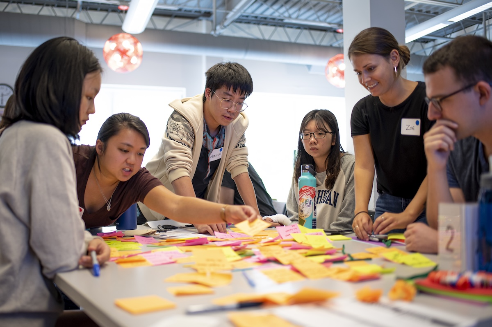

Before Your Experience Begins
Engaged learning gives UMSI students the opportunity
to apply classroom knowledge to real challenges.
Before beginning a project, it is important to
understand the community, establish expectations,
and prepare to collaborate with others.
Unlike a traditional classroom assignment, an
engaged learning project involves real people,
organizations, and changing circumstances.
Preparation helps students approach this work
with realistic goals, clear responsibilities,
and respect for their project partners.
What to Consider Before You Begin
Effective preparation involves understanding
yourself, your team, and the organization or
community you will be working with.
Understand Your Role
Consider how your identity, experiences,
assumptions, and perspectives may influence
the way you approach a project.
Rather than entering a community as an outside
expert with all the answers, approach the work
as a collaborative learner. Listen carefully,
ask questions, and recognize the knowledge
your partners already have.
Learn About Your Community Partner
Research the organization, its mission,
the people it serves, and the context
surrounding the project.
Think about who may be affected by your
work and how community members and
organizational partners should participate
in decisions.
Assess Your Team's Readiness
Discuss each team member's skills,
interests, availability, responsibilities,
and learning goals.
Identify any gaps in your team's knowledge
and consider what additional support or
preparation may be necessary.
Establish Project Expectations
Review project commitments, deadlines,
leadership responsibilities, and expected
outcomes before beginning the work.
Start identifying the project's scope,
potential constraints, and questions
that need to be discussed with your partner.

Your Preparation Checklist
Use these steps to organize your preparation
before starting an engaged learning project.
-
Reflect on your perspective:
Consider how your experiences, assumptions,
and identity may shape your approach to
the project.
-
Research the project context:
Learn about the organization, community,
project history, and affected stakeholders.
-
Set learning goals:
Identify the technical, professional,
interpersonal, and ethical skills you
hope to develop.
-
Review your team's capacity:
Compare your team's skills and availability
with the needs of the project.
-
Clarify expectations:
Review deadlines, responsibilities,
commitments, and intended outcomes.
-
Identify open questions:
Write down what you need to learn from
your partner before finalizing the
project's scope and deliverables.
Questions to Ask Yourself
Before beginning your project, consider
the following questions:
-
What do I hope to learn from this experience?
-
Who will be affected by the project and
its outcomes?
-
What assumptions am I making about the
partner, community, or project?
-
What knowledge and skills does my team
already have?
-
What knowledge or perspectives are missing
from our team?
-
How will the partner participate in
project decisions?
-
What would a mutually beneficial
outcome look like?
Helpful Preparation Resources
These resources can help you reflect on
your responsibilities, understand community
engagement, and organize your project.
Self-Reflection and Community Engagement
Project Planning and Scoping
Leadership and Responsibilities
Ready to Get Started?
Once you have reflected on your goals,
researched your project context, and discussed
expectations with your team, you will be
better prepared to begin collaborating with
your project partner.
The next stage focuses on launching your
project, establishing communication,
and putting your preparation into practice.